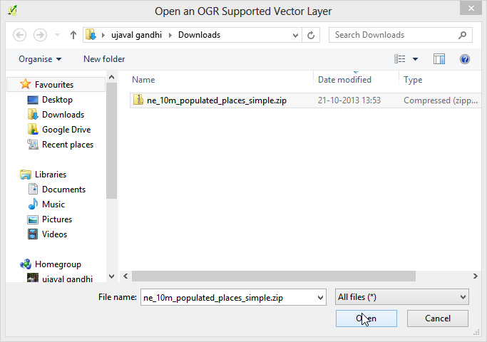

Εργασία με Χαρακτηριστικά
[ Download PDF A4 Letter ]
Τα δεδομένα GIS έχουν δύο μέρη - τα χαρακτηριστικά και τις ιδιότητες. Τα χαρακτηριστικά είναι δομημένα δεδομένα για κάθε χαρακτηριστικό. Αυτό το tutorial δείχνει πώς να δείτε τα χαρακτηριστικά και να κάνουμε τα βασικά ερωτήματα σχετικά με τους QGIS.
Επισκόπηση του έργου
Το σύνολο των δεδομένων για αυτό το tutorial περιέχει πληροφορίες σχετικά με κατοικημένες περιοχές του κόσμου. Ο στόχος είναι να αναζητήσετε και να βρείτε όλες τις πρωτεύουσες του κόσμου που έχουν πληθυσμό άνω των 1.000.000.
Διαδικασία
Αφού έχετε κατεβάσει τα δεδομένα, ανοιξτε το QGIS. Μετάβαση σε: επιλογή μενού:Layer –> Add Vector Layer.

Κάντε κλικ στο Browse και μεταβείτε στο φάκελο όπου έχετε κατεβάσει τα δεδομένα.

Εντοπίστε το κατεβασμένο αρχείο zip ne_10m_populated_places_simple.zip. Δεν χρειάζεται να αποσυμπιέσετε το αρχείο. Το QGIS έχει τη δυνατότητα να διαβάσει απευθείας τα αρχεία zip. Επιλέξτε το αρχείο και κάντε κλικ στο κουμπί Open.

Θα πάρετε ένα παράθυρο διαλόγου που σας ζητά να επιλέξετε το στρώμα για να ανοίξει. Επιλέξτε ne_10m_populated_places_simple.shp και κάντε κλικ OK.

Η επιλεγμένη στρώση θα πρέπει τώρα να τοποθετηθεί στο QGIS και θα εμφανιστούν πολλά σημεία που αντιπροσωπεύουν τις κατοικημένες περιοχές του κόσμου.

Για να δείτε τα χαρακτηριστικά του κάντε δεξί κλικ στο στρώμα και επιλέξτε Open Attribute Table.

Εξερευνήστε τα διάφορα χαρακτηριστικά και τις αξίες τους.

Ενδιαφερόμαστε για τον πληθυσμό του κάθε χαρακτηριστικού, έτσι pop_max είναι το πεδίο που ψάχνουμε. Μπορείτε να κάνετε κλικ δύο φορές στο πεδίο κεφαλίδας για να ταξινομήσετε τη στήλη με φθίνουσα σειρά.

Τώρα είμαστε έτοιμοι να εκτελέσουμε το ερώτημα μας σχετικά με αυτά τα χαρακτηριστικά. : guilabel:Select features using an expression.

Στο παράθυρο Select By Expression , επεκτείνετε το Fields and Values section και κάντε διπλό-κλικ στο pop_max label. Θα παρατηρήσετε ότι προστίθεται στο κάτω μέρος τμήμα της έκφρασης. Αν δεν είστε σίγουροι για τις τιμές των πεδίων, μπορείτε να κάνετε κλικ στο Load all unique values για να δείτε τι υπάρχουν στο σύνολο δεδομένων οι τιμές των γνωρισμάτων. Για αυτή την άσκηση, ψάχνουμε να βρούμε όλα τα χαρακτηριστικά που έχουν πληθυσμό άνω των 1.000.000. Έτσι ολοκληρωθεί η έκφραση ως ” pop_max “> 1000000 και κάντε κλικ στο Select.

Κάντε κλικ στο Close και να επιστρέψετε στο κύριο παράθυρο του QGIS. Θα παρατηρήσετε ότι ένα υποσύνολο των σημείων καθίστανται τώρα σε κίτρινο. Αυτό είναι το αποτέλεσμα του ερωτήματός μας και βλέπετε όλες τις θέσεις από το σύνολο δεδομένων που έχουν την pop_max τιμή παραμέτρου μεγαλύτερη από 1.000.000.

Ο στόχος αυτής της άσκησης είναι να βρεθούν τα μέρη που είναι πρωτεύουσες χωρών. Ας βελτιώσετε το ερώτημά μας για να επιλέξετε μόνο εκείνα τα μέρη που είναι πρωτεύουσες. Κάντε κλικ στο κουμπί :guilabel:`Select feature using an expression`στον πίνακα ιδιοτήτων.

Το πεδίο που περιέχει αυτά τα δεδομένα είναι adm0cap. Η αξία 1 δείχνει ότι το μέρος είναι ένα κεφάλαιο. Εισάγετε την έκφραση ως`” adm0cap “= 1`. Από τη στιγμή που θέλετε να αναζητήσετε μόνο εντός των προηγούμενων αποτελεσμάτων της ερώτησης μας, επιλέξτε: guilabel: Επιλέξτε μέσα selection.

Κάντε κλικ στο :guilabel:`Close`και να επιστρέψετε στο κύριο παράθυρο του QGIS. Τώρα θα δείτε ένα μικρότερο υποσύνολο των σημείων που επιλέγονται. Αυτό είναι το αποτέλεσμα του δεύτερου ερωτήματος και δείχνει όλα τα μέρη από το σύνολο δεδομένων που είναι πρωτεύουσες χωρών, καθώς έχουν πληθυσμό μεγαλύτερο από 1.000.000.

Ας σώσουμε αυτά τα αποτελέσματα σε ένα ξεχωριστό στρώμα. Κάντε δεξί κλικ στο επίπεδο και επιλέξτε Save Selection As.

Κρατήστε την επιλογή μορφής, όπως`ESRI Shapefile`και πληκτρολογήστε το όνομα εξόδου, όπως`large_capital_cities.shp`. Επιλέξτε το πλαίσιο δίπλα στο στοιχείο Add saved file to map και κάντε κλικ OK.

Το νεοσύστατο αρχείο shapefile θα φορτωθεί αυτόματα στο QGIS. Απενεργοποιήστε τις κατοικημένες θέσεις στρωμάτων από το UN-επιλέγοντας το πλαίσιο δίπλα σε αυτό. Τώρα, θα εμφανιστούν μόνο τα χαρακτηριστικά από τo νεοσύστατο στρώμα που περιέχει πρωτεύουσες του κόσμου που έχουν πληθυσμό μεγαλύτερο από 1.000.000.